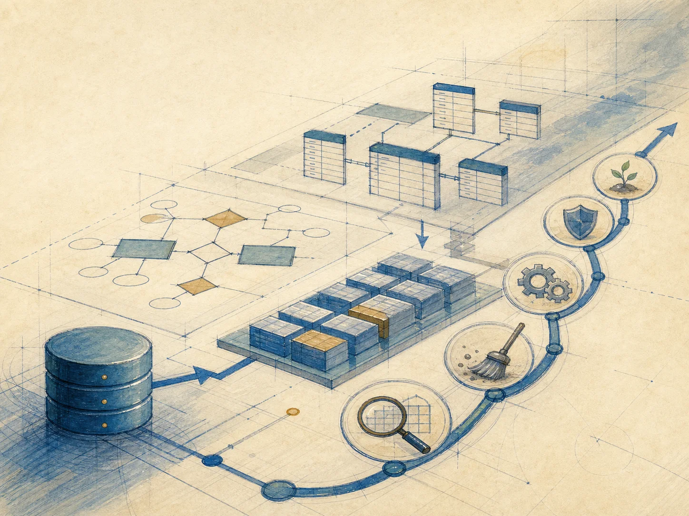
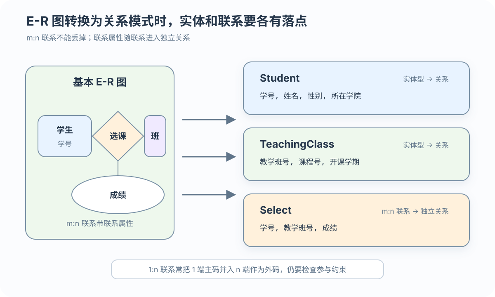
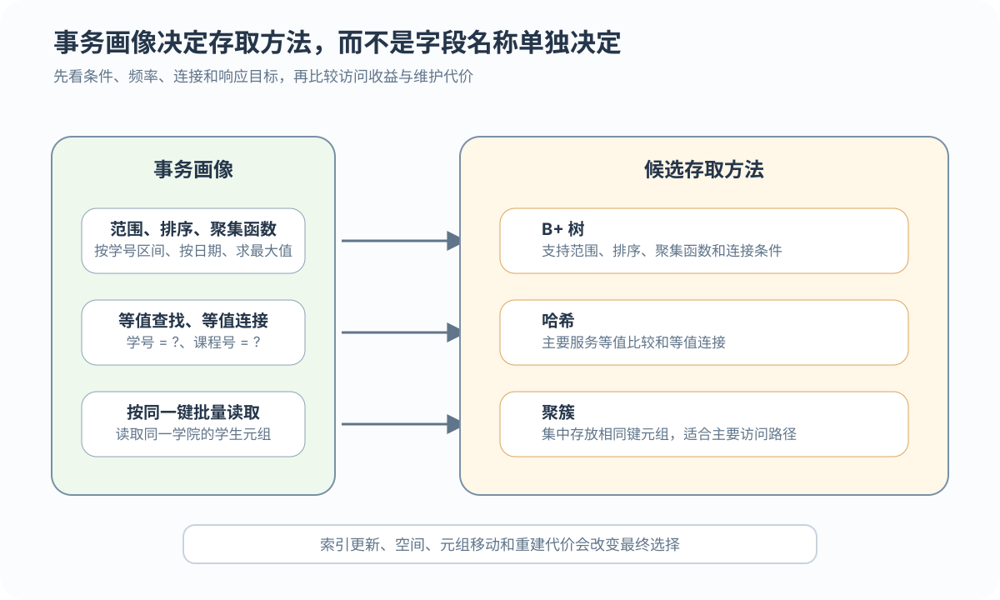

找出重复来源
写出数据依赖，检查同一事实是否因部分、传递或多值依赖被重复保存

从 E-R 图到表和索引，再用真实查询、写入与恢复演练检查设计
 VER. 2608
Built with impress.js
VER. 2608
Built with impress.js
把 E-R 图转成关系，按读写选择索引，再从测试失败处决定回哪一步修改
先用一个 m:n 示例说明属性、码、外码和联系属性如何落位

学生(学号 PK, 姓名, 所在学院) 教学班(教学班号 PK, 课程号 FK, 开课学期) 选课(学号 PK/FK, 教学班号 PK/FK, 成绩)
选课主码为（学号，教学班号）；两列分别作为外码，指向学生和教学班
联系属性和参照关系不能在转换中丢失
| E-R 元素 | 关系落点 | 码／外码动作 | 选择判据 |
|---|---|---|---|
| 实体型 | 一个关系模式 | 实体码成为主码 | 实体属性直接成为关系属性 |
| 1:1 联系 | 独立关系，或并入一端 | 独立关系时两端码为候选码；合并时加入另一端外码 | 参与约束、联系属性、空值与访问方式 |
| 1:n 联系 | 独立关系，或并入 n 端 | n 端加入 1 端主码作外码；独立关系通常以 n 端码作码 | 联系属性与访问方式 |
| m:n 联系 | 独立关系 | 两端码是外码，通常共同组成复合主码 | 联系本身承载事实 |
| 多元联系 | 独立关系 | 各参与码和联系属性进入；候选码由业务语义判断 | 事实是否由多端共同确定 |
候选码不一定都选作主码；联系属性不能丢失，外码是否可空要由参与约束决定
用依赖和范式找重复，查分表是否产生伪元组，再看常用查询要连接几张表
写出数据依赖，检查同一事实是否因部分、传递或多值依赖被重复保存
按常用查询和更新选择水平或垂直分解；若合表或保留派生值，要列出同步更新入口
检查分解是否无损连接并保持依赖
统计一次业务操作要连接几张表、更新哪些行、多久执行一次，以及失败后怎样修复
拆分关系前先明确按什么拆，拆分后再检查结果是否可靠
| 分解方式 | 关系代数记法 | 适合的问题与风险 |
|---|---|---|
| 水平分解 | Ri = σpi(R) | 按元组条件分开；要防止遗漏或不必要重叠，重构通常靠并集 |
| 垂直分解 | Ri = πK∪Ai(R) | 按属性集合分开；公共码必须保留，重构依赖连接 |
无损连接要求重新连接子关系后只能得到原关系，不能产生伪元组
依赖保持要求重要函数依赖尽量能在子关系中局部检查，不必每次都回到全局连接
Student(Sno, Name, Dept, BirthDate, Address) 可按事务拆成 StudentCore(Sno, Name, Dept) 与 StudentProfile(Sno, BirthDate, Address)，但要保留公共码并检查连接代价
教师看所教班级，学生只看本人记录；视图还能固定常用多表查询的列
| 需要 | 视图做法 | 结果 |
|---|---|---|
| 用户习惯不同 | 提供别名或重排列 | 不改全局列名 |
| 权限范围不同 | 教师视图隐藏学生身份；学生视图只展示本人记录 | 收紧可见范围 |
| 查询过于复杂 | 封装选课与课程查询 | 简化常用操作 |
视图表达用户外模式；实际谁可以使用视图，仍由目标 DBMS 的权限或安全策略控制
记录 SQL 的查询列、返回行数、频率和写入情况，再查目标 DBMS 支持什么
别因学号重要就建索引；看 SQL 是否用它筛选或连接、命中行数和读写频率
| 事务信息 | 需要记录 | 影响选择 |
|---|---|---|
| 查询关系 | 访问哪些表和视图 | 存取路径 |
| 选择与连接 | 条件属性、等值或范围、选择性 | B+ 树、哈希和组合索引候选 |
| 投影与更新 | 读取列、修改列和更新频率 | 物理维护代价；垂直分解另作逻辑判断 |
| 频率与时限 | 关系规模、增长、调用频率和响应目标 | 响应、吞吐和存储目标 |
按学号查询选课并在开学高峰写入选课表时，索引选择不能只看“学号是不是主码”，还要看选择性、频率和更新代价
日期范围查选 B+ 树候选，学号等值查选哈希候选；实测查询收益和写入代价

B+ 树适合作为范围、排序、聚集函数或连接条件的候选路径
哈希适合等值查找或等值连接，不适合范围查找
聚簇把相同键的元组集中存放，适合主要访问路径
在当前聚簇模型中，一个关系只能参加一个聚簇；B+ 树、哈希和聚簇的具体实现与参数要核对目标 DBMS
每条索引都可能增加写入和维护成本
| 观察 | 可能收益 | 可能代价 |
|---|---|---|
| 高频且有选择性的条件 | 可能更快定位元组 | 更新时维护索引 |
| 连接条件 | 可能减少连接代价 | 占用存储空间 |
| 多列组合条件 | 组合索引可能匹配常用路径 | 列顺序与选择性需按事务评价 |
| 高频更新关系 | 少量关键索引 | 过多索引拖慢写入 |
| 聚簇码集中访问 | 减少物理块读取 | 元组移动和索引重建 |
主码和外码是逻辑约束；是否为外码另建索引，是另一项物理设计选择
选课峰值、表增长速度和恢复时限共同决定索引、存储、日志与备份
不同 DBMS 能设置的存储布局、缓冲区和块大小不同；先查目标产品实际支持什么，再承诺响应时间和恢复时间
数据转换和应用程序开发要与模式实现同步
装载与应用开发同步推进，在联合调试处汇合；目标模式是目标 DBMS 可接受的结构描述
近真实数据测试选课、退课、成绩和恢复；正确、快速且可恢复后再扩大装载
| 阶段 | 观察证据 | 不达标时回到哪里 |
|---|---|---|
| 小批量装载 | 清洗映射、主外码和完整性通过率 | 数据转换与映射 |
| 应用联合调试 | 业务场景、事务结果和错误处理 | 应用程序，必要时逻辑设计 |
| 性能评价 | 响应时间、吞吐量和空间使用 | 物理设计，必要时逻辑设计 |
| 恢复演练 | 能否回到一致状态、恢复时间是否可接受 | 转储与恢复方案 |
试运行流程：小批量装载 → 联合调试 → 实测 → 修正 → 复测 → 合格后扩大装载并进入正式运行
数据增长拖慢查询，角色改权限，退课规则改约束；DBA 用日志和监控发现
制定转储和恢复计划
根据用户和业务变化更新安全和完整性规则
采集性能数据并分析瓶颈
按需重组或重构数据库
表和字段没问题、碎片多或空间利用差时重组；需增删字段、表或索引时重构
| 维护动作 | 改变什么 | 典型场景 |
|---|---|---|
| 重组 | 按原物理设计重新整理实际存储，不改逻辑结构和物理设计 | 回收空间、减少指针链 |
| 重构 | 部分修改模式或内模式 | 增删属性、表或索引，改变数据类型 |
| 新系统评估 | 现有模式和程序需要大范围重做 | 原系统已无法支持新的业务流程和数据规模 |
文件碎片多、空间利用差时先重组；需要增删字段、表或索引时重构；若业务流程和数据规模都已改变，再评估新系统
查关系、读写和试运行，分清上线后是存储还是规则变化，据此决定修改位置
列出实体和 m:n 联系生成的关系，标出主码、外码和联系属性；分解后再检查无损与依赖保持
给出查询条件、选择性、更新频率和响应目标，再选择 B+ 树、哈希、聚簇或不加索引，并写出维护代价
映射错误回数据转换，业务结果错误回应用或逻辑设计，性能不达标回物理设计，恢复失败回恢复方案
文件碎片和空间利用变差先重组，需要增删字段、表或规则才重构；现有模式与程序需大范围重做时再评估新系统